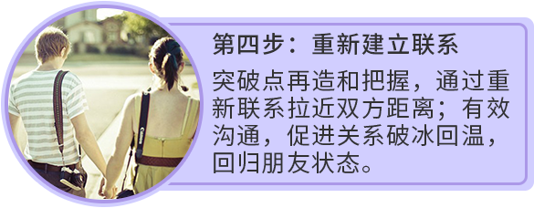

绝大多数的分手都是可以修复的，
80%的分手一开始都是假性分手
假性分手的修复的难度比真性分手小得多，
但绝大多数人终会把假性分手折腾成真性分手才找专业人士求助。
还有很多人因为分不清真性分手和假性分手，
从而使用了错误的修复方法，
把对方越推越远，导致修复更加困难，甚至造成无力回天的局面。
分手后想修复，却屡屡失败？
Ta说分手，你百思不得其解，说好了白头偕老，甜蜜与共。
Ta却选择离开，留下你黯然神伤......
你纠结再三想修复，询问好友怎么办，甚至寄希望于网络搜索的答案。
却不知,旁人随意的建议、简单的回复，往往因为不了解详情，不够专业，甚至还会弄巧成拙，错失良机。
修复时，你是否犯过类似的错误？
-
 不停道歉
不停道歉
只会逃避问题，用乞求来挽留对方，让对方厌烦
-
 歇斯底里
歇斯底里
自暴自弃来博取同情和心软，让TA对你失去尊重。
-
死缠烂打
电话轰炸、短信骚扰等只会增加TA的压力，远离你
-
 威胁对方
威胁对方
采用过激行为，来威胁对方，逼他跟自己
复合 -
 据理力争
据理力争
分手后，把分手原因归结在对方身上，却不检讨自己
-
 找朋友帮忙调解
找朋友帮忙调解
试图让对方好友帮你说话，只会让对方感到不被理解

免费预约分析

免费预约分析
修复六步走，针对性修复感情！
第一步：辨明真假性分手
用火眼金睛去辨别对方的真心，用专业眼光去判断修复的成功率。完美的开始，针对性实施，让修复不再出师不利！
-
『假性分手』
对方对现状不满意，希望通过分手获得更多关注，重新定义双方关系，改变彼此的相处方式。
预约分析 -
『真性分手』
长久以来的矛盾得不到疏解，或者对方有了巨大的价值提升后，想要完全想放弃这段关系。
预约分析
-

-

- 
-

-

免费预约分析
一味的等待,只会让自己后悔终生...
-
 修复恋情
修复恋情
- 挽救家庭
-
 自我提升
自我提升
瞳爱专业修复，让爱不留遗憾！
免费预约分析
选择瞳爱 快速修复
瞳爱创办于2008年，是面向华人家庭提供专业的情感咨询与规划的优质品牌，旗下拥有冷爱、肖然等一批极具影响力的明星情感导师，并囊括众多心理学、社会学等领域的专家学者。 目前，注册会员达 5296880名，已帮助264660位用户觅得幸福 。先后被中国社会工作联合会家庭家庭工作委员会等机构授予常务理事单位和理事单位，并长期与美国家庭家庭协会（AAMFT）合作。
-
品质服务
-
承诺保障

-
隐私保护

免费预约分析
免费预约导师，获取专业分析
请选择您的感情困扰：
男友提出分手，该怎么办？
冲动分手后，该如何修复？
对方冷暴力，该如何修复他？
老公出轨了，但我不想离婚，该怎么让他回归家庭？
老公要离婚，该怎么拒绝？
情感冷淡，如何升温？
其他情感问题